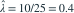

独立同分布，密度为
独立同分布，密度为  ，
， 。样本总和为 25。速率参数
。样本总和为 25。速率参数  的极大似然估计值与矩估计值分别为多少？
的极大似然估计值与矩估计值分别为多少？- A0.4 与 0.4
- B2.5 与 2.5
- C0.4 与 2.5
- D2.5 与 0.4
我已思考，展开答案与解析
正确答案：A
- 对数似然为 ，最大值在

处取得。 - 又因 ，矩估计同样为 。
易错提醒这里估计的是速率参数，不是均值或尺度参数。
原模拟卷 A · 模拟卷 A 第 28 题
原创
独立同分布，密度为 ，。样本总和为 25。速率参数 的极大似然估计值与矩估计值分别为多少？
处取得。原模拟卷 A · 模拟卷 A 第 28 题
原创